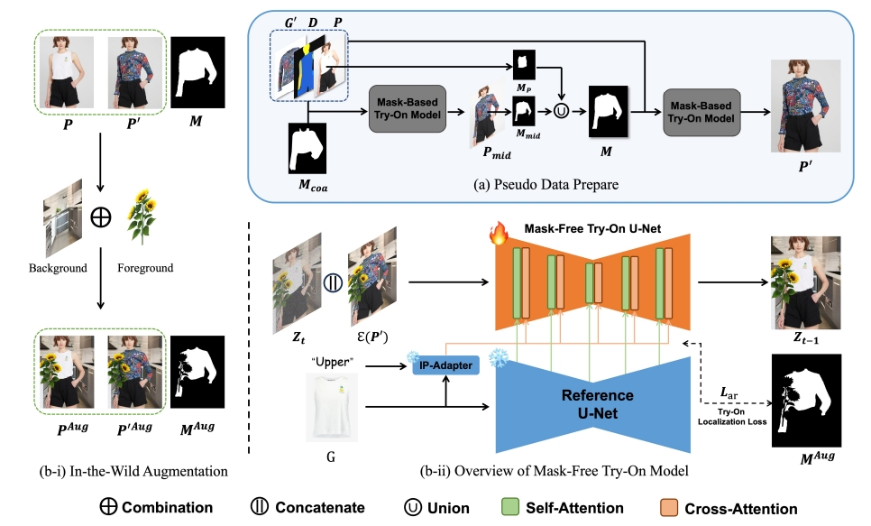
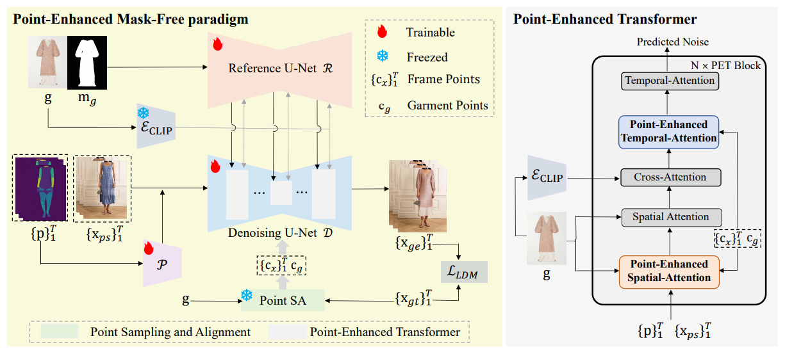
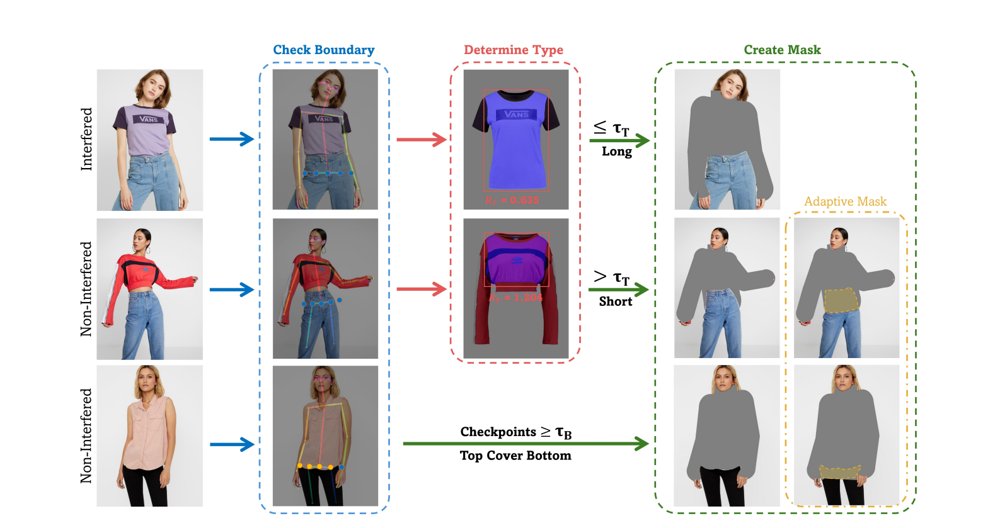
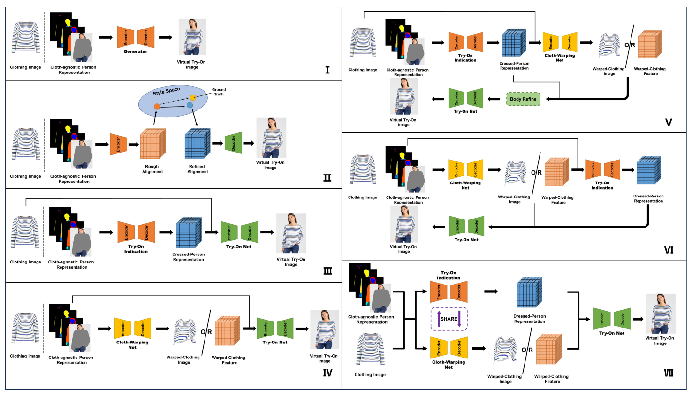

|
Xuanpu Zhang
I started my master degree in computer vision at Tianjin University in 2022, advised by Prof. Dan Song. Before that, I obtained a B.S. degree in Electronic Information from Hebei University of Technology and was luckily working with Prof. Zhenxv Bai. My research interests lie in image generation and editing. Previously, I focused on the virtual try-on task. In the future, I hope to engage in fundamental research on image editing algorithms. Currently, I am applying for a Ph.D. in the 2025/26 academic year, feel free to contact me. |
Research Internships
Alibaba |
Kuaishou |
||
| 2024 | 2025 |
Education
Tianjin University |
||
| M.S. | 2022-2025 |
Research Papers and Projects
2025
|  | (NEW!) BooW-VTON: Boosting In-the-Wild Virtual Try-On via Mask-Free Pseudo Data TrainingXuanpu Zhang, Dan Song, Pengxin Zhan, et al.Conference on Computer Vision and Pattern Recognition (CVPR), 2025 Star |
|  | PEMF-VVTO: Point-Enhanced Video Virtual Try-on via Mask-free ParadigmTianyu Chang, Xiaohao Chen, Zhichao Wei, Xuanpu Zhang, et al.ICCV Submission, 2025 |
2024
|  | Better Fit: Accommodate Variations in Clothing Types for Virtual Try-onDan Song, Xuanpu Zhang, Jianhao Zeng, et al.IEEE Transactions on Circuits and Systems for Video Technology (TCSVT), 2024 |
|  | Image-Based Virtual Try-On: A SurveyDan Song, Xuanpu Zhang, Juan Zhou, et al.International Journal of Computer Vision (IJCV), 2024 |